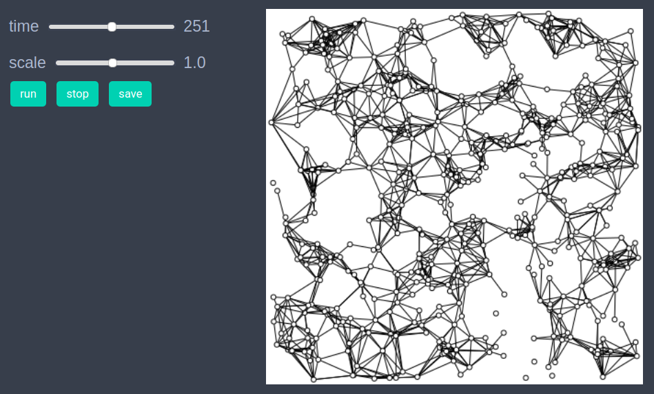
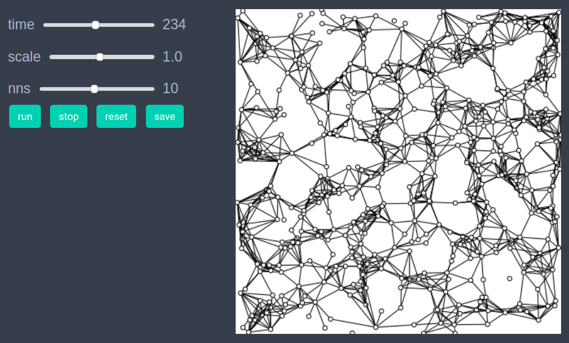
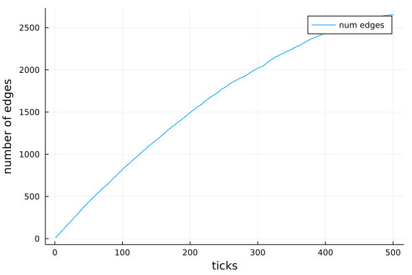

Nearest neighbor graph generator
We include the present model as an example of dynamic graphs in EasyABM.
using EasyABMStep 1: Create Model
In this model we will work solely with the graph and won't require agents. We create a dynamic graph of n=500 vertices (and no edges) and create a model with this graph as base space. The model parameter nns is the number of nearest neighbors that each node will have edges with.
n=500
graph = dynamic_simple_graph(n);
model = create_graph_model(graph, nns=10)Step 2: Initialise the model
In this model we use NearestNeighbors.jl package to produce a kdtree of points which will be used to get nearest neighbors in the step rule. We create a random 2xn matrix and initialise the positions of nodes with these vectors.
vecs = rand(2, n);
function initialiser!(model)
for i in 1:n
model.graph.nodesprops[i].pos = (vecs[1,i], vecs[2,i])
end
end
init_model!(model, initialiser= initialiser!)Step 3: Run the model
In the step_rule! function we need to compute nearest neighbors of points for which we make use of NearestNeighbors.jl package.
using NearestNeighbors
kdtree = KDTree(vecs,leafsize=4)
function step_rule!(model)
if model.tick <=n
i = model.tick
indices, _ = knn(kdtree, vecs[:,i], model.parameters.nns, true)
for j in indices
if j!=i
create_edge!(i,j, model)
end
end
end
end
run_model!(model, steps=n, step_rule = step_rule! )If one wants to see the animation of the model run, it can be done as
animate_sim(model)
After defining the step_rule! function we can also choose to create an interactive application (which currently works in Jupyter with WebIO installation) as
create_interactive_app(model, initialiser = initialiser!,
step_rule = step_rule!,
model_controls = [(:nns, :s, 1:20)],
frames = n
)
Step 4: Fetch Data
In the present model we didn't record any data, however, since the model involved a dynamic graph the number of edges (and nodes) at each time step were recorded by default by EasyABM. We can get the data of number of edges at each time step as follows
df = get_nums_edges(model, edge-> true, labels=["num edges"], plot_result = true)